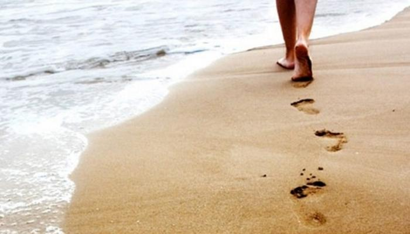
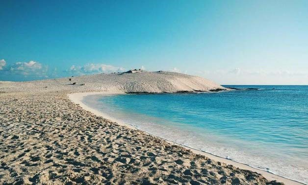
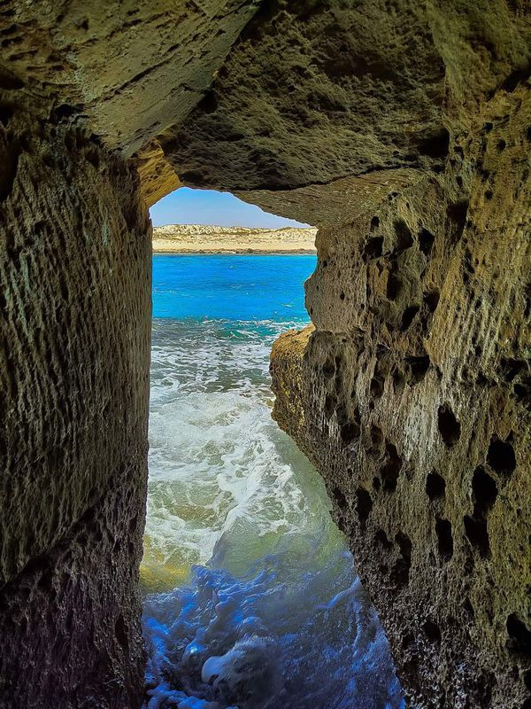
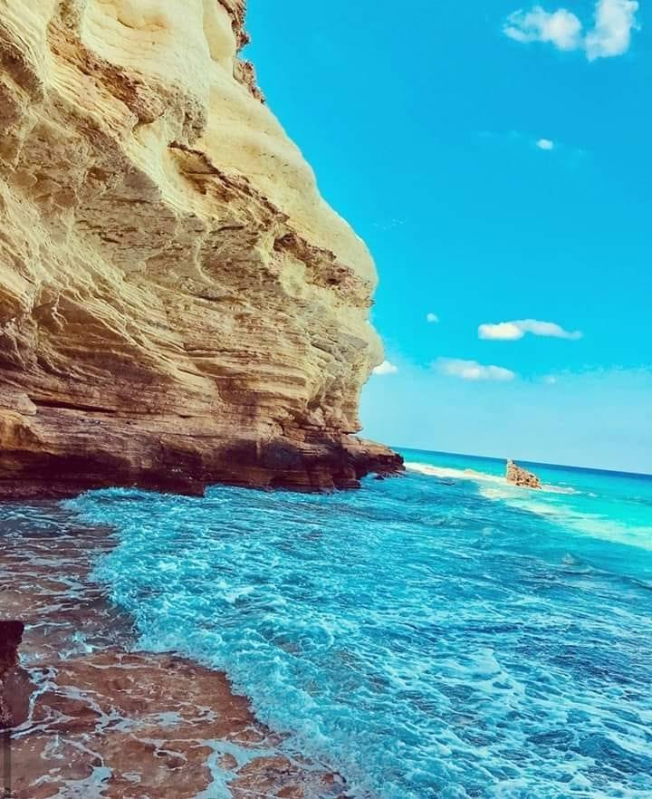

the famous places in matrouh

El lagoon beach :
El Gouna Beach is on the Mediterranean shore in the city of Marsa Matrouh, and it is characterized by a blue area and a stretch of soft white sand, nice, general activities in the fun water activities such as swimming, diving, snorkeling, sports, socks, etc., and you will have the opportunity to see the fish swimming between your feet from the severity of the clarity of its waters.

Cleopatra bath :
Queen Cleopatra had a palace there that overlooked her basins, known today as Cleopatra Beach. The sky is bright blue, the sand bright white, the sea perfect , and there's not a soul on the beach. Believed to be the bathing place of Cleopatra and Marcus Antonius; Cleopatra Beach sits about a 14km drive north-west of Marsa Matrouh around the bay’s thin tentacle of land. The sea here is an exquisite turquoise hue, and the rock formations are worth a look.

Agiba beach :
Agiba Beach gets its name from the Arabic for “miracle”. It lies on Egypt’s Mediterranean Sea coast just west of the town of Marsa Matrouh. Set back in a small cove, the near white sands are trapped between cliffs on all sides. In fact, access to the beach is via a footpath down from the clifftop, making it unsuitable for very young children and those with movement issues. A small café at the top of the cliff offers refreshments. It is one of the few facilities beyond deck chairs and parasols. It’s usually open between June and October, when the beach is at its busiest

salt cave